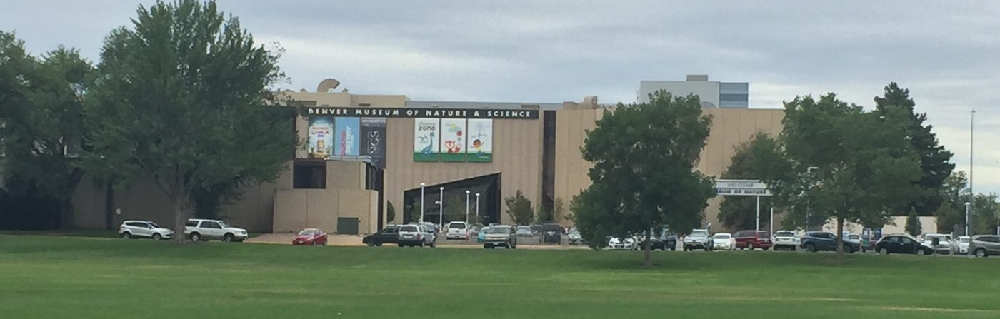
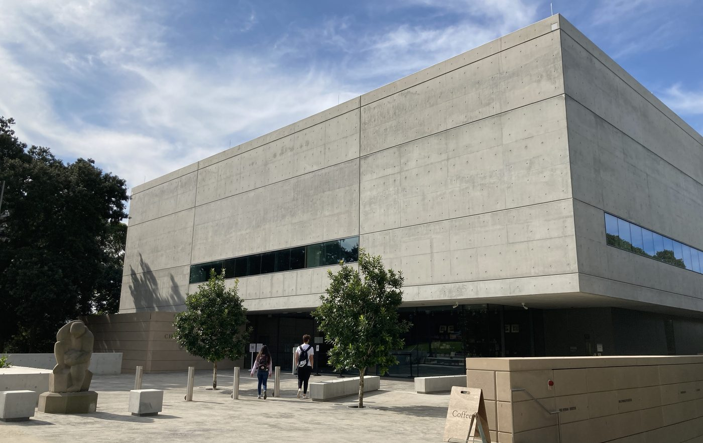

Unit 3 · Human remains · Lesson 6
Whose remains? The ethics of study, display and ownership
A head in a glass case in a country-town school library. Who has a claim to her, and should she be on show at all?
Year 11 Ancient History · Present with → or space · Read on a phone with R
Connect · 3 minutes · everyone writes one line · press K for the timer
Name one display choice from Lesson 4, and what it communicates
“The museum chose to … , which communicates …”
Kept in a cold cell (−6 °C, 99% humidity) and seen only through a small window → preservation comes first; visitors look in at a fragile original.
His conserved head is shown with a replica body → visitors meet a whole person, not just a head, so a label must say what is a copy.
22 royal mummified people carried through Cairo in nitrogen-filled capsules, with ceremony → royal dignity and national pride.
Today: who should make those choices, and should some remains be on show at all?
Learning intentions and success criteria · 2 minutes
Today’s goals
- Analyse the ethical issues in studying, displaying and owning human remains
- Write an argument paragraph on an ethical question
- explain three ethical issues, with an example of each
- explain the claims of three stakeholders
- write a paragraph that judges, uses evidence, weighs a rival view and resolves
Syllabus outcomes: AH-11-05 analyses different types of sources for evidence to support a historical account or argument · AH-11-06 explains differing interpretations and representations of the past · AH-11-07 communicates historical understanding, applying historical knowledge, terms and concepts. Life Skills: AH-LS-09 identifies different interpretations of the past · AH-LS-11 communicates information about the past using historical terms and concepts.
Note-making · the routine for the whole course
How to structure your notes
questions and key terms, written after
short phrases, arrows (→ leads to), abbreviations (c. = about; BCE = Before the Common Era)
- 1Rule up the page firstA cue column about a quarter of the page wide; title and date at the top; room for a summary at the bottom.
- 2Listen and look, then writeDon’t copy while a slide is being explained. Phrases, not sentences.
- 3Write your own notes at each ✎ checkpointThen compare with the model notes, one row at a time. Add what you missed in a second colour.
- 4Write the cue questions afterwardsUse exam verbs: explain, analyse, assess. To revise, cover your notes and answer the cues.
- 5Finish with a three-sentence summaryCheckpoints today: the head in the library · two views on display (if time, or at home). Your stakeholder map and jigsaw grid count as notes too.
Key vocabulary · add to the unit word wall
Words for today’s argument
| Remains and how we study them | Meaning |
|---|---|
| Human remains | The bodies, or parts of the bodies, of people who have died — including bones, preserved tissue and ashes. |
| Mummified person | A person whose body has been preserved, naturally or deliberately; some museums (e.g. National Museums Scotland) now prefer this to ‘mummy’. |
| Invasive analysis | Study that damages or removes part of the remains, such as cutting or taking samples. |
| Non-invasive analysis | Study that leaves the remains intact, such as X-ray or CT scanning. |
| CT scan | Computed tomography: X-ray images taken from many angles to show the inside of a body in 3D without cutting it. |
| Ethics and argument | Meaning |
|---|---|
| ethical issue | A question about what is right or fair to do — here, how the dead should be treated, and who decides. |
| Stakeholder | A person or group with an interest in a decision. |
| Consent | Permission given freely; the ancient dead cannot give it, which raises ethical questions. |
| provenance | Where an object was found and its history of ownership since; without it, an object loses its context and may be a fake. |
| Repatriation | Returning remains or cultural material to the Community or country they came from. |
| evaluative modality | Words that show how certain the writer is: may, probably, is likely to, on balance. |
1 · The head in the library · I do — listen · 3 minutes
A head in a school library
Inside that glass case is a mummified head and according to its plaque, it was donated to Grafton High School around 1915. Now, over 100 years later, questions are being raised about where it really came from and whether it really belongs there.
ABC Radio National, Stuff the British Stole, ‘The Head in the Library’, presented by Marc Fennell, 28 June 2023 (audio, 41 minutes) · a podcast made with CBC Podcasts
- Who: an Egyptian woman, thought to have been 50–60 when she died
- When: probably Egypt’s Greco-Roman period (332 BCE – 395 CE), judging by flecks of gold leaf on her head
- How she reached Grafton: uncertain; accounts point to a local doctor or a famous Egyptologist, and neither is proven
- Since then: the school’s attempts to return her to Egypt or give her to a Sydney museum reportedly failed; by 2024, CT scans and a 3D-printed copy of her skull had let a forensic sculptor rebuild her face
| Who speaks? | What should happen to her? | Why? |
|---|---|---|
| 1 | ||
| 2 | ||
| 3 |
She was a person. Use respectful words, such as ‘mummified person’. This page shows no photograph of her: we do not need one to think about what should happen to her.
1 · The head in the library · I do — six ethical issues · one press per issue
Six ethical issues, one case
1 · The head in the library · I do — stakeholder map · think aloud · draw yours as I go
Who has a claim to her, and on what grounds?
Where claims conflict: learning and science ↔ her consent and dignity · the school’s possession ↔ a return to Egypt.
Notes checkpoint 1 of 2
The head in the library: issues and stakeholders
2 · Two views on display · We do — jigsaw · 12 minutes · press K for the timer
Jigsaw: two writers, one grid
- 1Expert groups · 5 minA: Chip Colwell. B: Tiffany Jenkins, as reported by Maev Kennedy. Read your card aloud. Fill in your row. Decide: how certain is the evidence, and why?
- 2Home groups · 5 minOne A expert and one B expert (pairs or fours). Teach your article; everyone fills in both rows.
- 3Whole class · 1½ minWhere do Colwell and Jenkins disagree about Britain’s bog bodies?
The key sentences on your card are in bold. Start with the Main argument column.
| Article | Main argument | Ethical principles | Strongest evidence | One limitation as a source | How certain? |
|---|---|---|---|---|---|
| A · Colwell (2017) | |||||
| B · Jenkins, reported by Kennedy (2010) |
2 · Two views on display · article card A · expert group A
AChip Colwell, ‘The Long Ethical Arc of Displaying Human Remains’
Chip Colwell, senior curator of anthropology at the Denver Museum of Nature & Science (USA), writing for the online magazine Atlas Obscura, 16 November 2017. The article’s subtitle: “A look at why museums exhibit Egyptian mummies, but not Native American bones.”
In 2017, he writes, US museums still held the remains of more than 100,000 Native American people in storage; his own museum took its last Native American skeleton off display in 1970. Of Native American protests, he writes: “Their objections boiled down to spirituality, racism, and consent.” A US law of 1990, the Native American Graves Protection and Repatriation Act, let tribes claim their ancestors: by 2017, museums had returned more than 50,000 for reburial.
“The answer lies in how remains were collected and their connection to living people today.” Vikings, bodies from England’s bogs and China’s first farmers, he says, were excavated “… with either the permission of descendants or from governments if no descendants are known.” Egyptian mummified people were also collected under colonialism, but in his view “… the Islamic communities of Egypt do not claim continuity with the people who built the pyramids.”
“In contrast, a repatriation movement for Britain’s bog bodies, Vikings, or Neolithic Chinese skeletons has not really happened.”

Recall Unit 1: Ralph Glidden dug up hundreds of burials on Santa Catalina Island, California, mainly 1919–1928: the kind of collecting Colwell describes.
How certain is his evidence, and for which remains?
2 · Two views on display · article card B · expert group B
BTiffany Jenkins, as reported by Maev Kennedy
Maev Kennedy, a journalist, in The Guardian (London), 25 October 2010: a news report on a new book by Tiffany Jenkins, a sociologist and visiting fellow at the London School of Economics. The argument is Jenkins’s; Kennedy reports it.
Jenkins found museums covering mummified people with linen, showing them in dark cases lit by a button, adding warning notices, or taking remains off display. Manchester Museum covered its mummified people with sheets, then partly uncovered them after public protest.
Museums have become “over-sensitive” to demands from minority groups, and sometimes their own staff. Pagan and druid groups were asking for ancient British remains to be reburied: Manchester consulted one, Honouring the Ancient Dead, before removing the head of a bog body from Roman Britain, Worsley Man.
“This is not driven by public demand, but professional insecurity.” “Unfortunately it will penalise the millions of people who enjoy learning from the display of human remains.” She adds that it will harm research too.
Kennedy reports a survey for English Heritage: only 9% of people were absolutely opposed to museums displaying human bones.
How certain is her evidence? Whose voices does this report leave out?
2 · Two views on display · We do — home groups · 5 minutes · each expert teaches their article
Home groups: complete the grid for both articles
| Article | Main argument | Ethical principles | Strongest evidence | One limitation as a source | How certain? |
|---|---|---|---|---|---|
| A · Colwell (2017) | Display is acceptable only when remains were collected properly and with respect for living descendants: Native American remains differ from Egyptian ones | consent · freedom to care for the dead (spirituality) · no racism | more than 100,000 Native American people’s remains held; objections of “spirituality, racism, and consent”; more than 50,000 returned after the 1990 law | one curator’s article for a general magazine; one sentence speaks for whole communities in Egypt | strong for Native American remains (numbers, a law); less certain for Egypt and Britain |
| B · Jenkins, reported by Kennedy (2010) | Museums have become “over-sensitive”: covering or removing remains harms learning and research | public education · research · museums’ own professional judgement | named British examples (Manchester’s sheets, Worsley Man’s head); a survey: only 9% absolutely opposed to display | a news report of one critic’s book: little room for descendants’ or curators’ reasons; British cases only | certain that displays changed; “professional insecurity” is her interpretation, not proven |
Check your row: does your “How certain?” column give a reason?
2 · Two views on display · whole class · 1½ minutes · cold call
Where do Colwell and Jenkins disagree about Britain’s bog bodies?
In contrast, a repatriation movement for Britain’s bog bodies, Vikings, or Neolithic Chinese skeletons has not really happened.
compared with the United States, where museums have returned more than 50,000 Native American people’s remains
Pagan and druid groups were asking for ancient British remains to be reburied. Manchester Museum consulted Honouring the Ancient Dead before removing the head of a bog body from Roman Britain, Worsley Man.
Kennedy’s report, in our words
Which is better supported? Could both be partly right?
They disagree less than it first seems. Colwell says a repatriation movement for Britain’s bog bodies ‘has not really happened’, and Jenkins, as Kennedy reports, also treats the reburial demands as coming from minority groups, such as pagans and druids. Where they differ is over what museums have done: Colwell presents bog bodies as remains excavated with permission, and so acceptable to show, while Kennedy reports that Manchester Museum consulted Honouring the Ancient Dead and then removed Worsley Man’s head from display. So both can be partly right: there were requests, and one museum acted on them, but these articles show no movement like the American one.
2 · Two views on display · We do — opinion continuum · 3 minutes · stand on the line
Where do you stand?
Ancient human remains should not be displayed in museums.
Strongly agreesomewhere in betweenStrongly disagree
two pieces of evidence for where you stand (the head in the library, Colwell, Jenkins, this museum) · and what would make you move.
For hundreds of years body parts in museum collections have been treated as objects … We have become so accustomed to seeing them on show that we often forget they once belonged to living people.
Dr Melanie Pitkin, Senior Curator of the Nicholson Collection, Chau Chak Wing Museum, University of Sydney, 4 April 2024, when the museum removed unwrapped Egyptian body parts from display · a guest in the Grafton episode
a named piece of evidence (Colwell’s test; Jenkins’s point about learning; the Grafton head’s missing provenance) · whose view it is · and a condition that would change your mind (“if the descendants agreed …”).

Notes checkpoint 2 of 2 If time · or at home
Two views on display
3 · Deconstruction · 5 minutes · colour-code your copy · one press per move
Should ancient human remains be displayed in museums?
The five moves
Attribute views precisely: Colwell argues · Jenkins, as reported by Kennedy · the sculptor says. Never ‘Kennedy argues’.
4 · You do · check first · hinge question · hold up A, B, C or D on “3, 2, 1, show”
Which sentence attributes the view most precisely?
- AMaev Kennedy, writing in The Guardian (2010), argues that museums are over-sensitive about human remains.
- BTiffany Jenkins, as reported in The Guardian (2010), argues that museums are over-sensitive about human remains.
- CThe Guardian, in a news report (2010), argues that museums are over-sensitive about human remains.
- DMost experts, as reported in The Guardian (2010), argue that museums are over-sensitive about human remains.
A is the best wrong answer: Kennedy is the reporter, not the arguer. C makes a newspaper the arguer: a news report passes on someone else’s view. D turns one critic into “most experts”: one book is one view, not everyone.
4 · You do · 16 minutes of writing · the 20-minute timer is running · your paragraph will be collected
To what extent should museums display bog bodies such as Tollund Man and Worsley Man?
Deconstruct the question · Verb to what extent: a judgement of degree (how far), not yes or no · Topic museums displaying bog bodies · Limits Tollund Man and Worsley Man; today’s evidence (Colwell; Jenkins, as reported by Kennedy; the Connect) · Do Judge → Evidence → Analyse → Evaluate → Resolve, with the same degree in the Judge and the Resolve
- One paragraph: Judge → Evidence → Analyse → Evaluate → Resolve.
- Use at least two pieces of evidence from today, each with its provenance.
- Attribute every view precisely: Colwell argues … · Jenkins, as reported by Kennedy, … · the museum states …
- Check it against our class checklist from Unit 2.
J: To a large / limited extent, museums should … · E: Chip Colwell, a museum curator, argues … · A: This suggests … · E: However, Tiffany Jenkins, as reported by …, argues …; yet … · R: On balance, … because …
Compare the head in the library with the display of Egypt’s royal mummified people in Cairo: does it matter who displays the dead, and where?
Museums should display bog bodies such as Tollund Man and Worsley Man to a large extent, but only as people, and with care when a group objects. Chip Colwell (Atlas Obscura, 2017) notes that ancient sacrifice victims preserved in England’s bogs were excavated ‘with either the permission of descendants or from governments if no descendants are known’, and that a repatriation movement for Britain’s bog bodies ‘has not really happened’. By his own test of how remains were collected, this makes bog bodies a strong case for display. Public interest points the same way: Tiffany Jenkins, as Maev Kennedy reported in The Guardian in 2010, argues that restricting display will ‘penalise the millions of people who enjoy learning from the display of human remains’, and Kennedy reports a survey for English Heritage in which only 9% of people were absolutely opposed to museums displaying human bones. Yet the same report shows that display can still be questioned: Manchester Museum consulted Honouring the Ancient Dead, a group that campaigns for the reburial of pre-Christian British remains, before taking the head of Worsley Man off display. Such requests appear to come from small groups, as both Colwell and Jenkins suggest, but they show that permission alone is not enough. Museum Silkeborg’s choice to show Tollund Man’s conserved head on a replica body is one answer: visitors meet a whole person, as long as the label says what is original. On balance, museums are largely justified in displaying bog bodies, because, on Colwell’s account, England’s were excavated with permission and the public learns from them, provided they are shown as people and requests like Manchester’s are heard.
Finish your notes If time · or at home
Summary: three sentences
- What ethical issues does the head in the library raise?
- How do Colwell and Jenkins differ on displaying human remains?
- What is your judgement, and what is its weakest point?
The head of an Egyptian woman, given to Grafton High School around 1915, raises issues of consent, dignity, ownership and display, because no one knows for certain who gave her or how she left Egypt. Chip Colwell argues that display depends on how remains were collected and on living people’s connection to them, while Tiffany Jenkins, as reported by Maev Kennedy, argues that museums have become over-sensitive and that hiding remains harms learning and research. My judgement is that display is justified only with documented provenance and permission, although its weakest point is that Jenkins is right that many people learn from seeing the remains themselves.
Check · 10 minutes · exit ticket · then hand in your paragraph and your ticket
The strongest argument on the other side
“The strongest argument on the other side is … because …”
whose argument it is, named precisely (Colwell; Jenkins, as reported by Kennedy; a group such as Honouring the Ancient Dead) · the evidence it rests on · why it is strong, or what would make you change your mind.
Next lesson: repatriation and Aboriginal Ancestral Remains, and your paragraph back with one strength and one next step.
Practice and review · 1 of 3 · true, false, justify
True or false? Justify your answer
- 1Maev Kennedy argues that museums have become over-sensitive about human remains. False — Kennedy reports it; the argument is Tiffany Jenkins’s.
- 2It is known for certain who gave the mummified head to Grafton High School. False — accounts point to a local doctor or a famous Egyptologist, and neither is proven.
- 3A CT scan is a non-invasive method of analysis. True — it uses X-ray images from many angles and leaves the remains intact.
- 4Colwell argues that no human remains should ever be displayed in museums. False — he says it depends on how the remains were collected and their connection to living people today.
- 5Colwell and Kennedy’s report give the same picture of how British museums treat bog bodies. False — Colwell presents bog bodies as excavated with permission and acceptable to show; Kennedy reports that Manchester removed Worsley Man’s head from display after consulting a pagan group.
- 6In the Resolve move, the writer refines the judgement in the light of the rival view. True — it is not a summary: it says on balance what is most likely, and what is still unknown.
Practice and review · 2 of 3 · writing
Practise the hardest moves
Rewrite: The Guardian says museums are too sensitive.
Tiffany Jenkins, a sociologist whose book was reported by Maev Kennedy in The Guardian in 2010, argues that museums have become “over-sensitive” about displaying human remains.
Rewrite: But some people think remains should be shown.
However, Jenkins argues that restricting display is ‘not driven by public demand, but professional insecurity’; yet her evidence measures the public’s wishes rather than descendants’, so it cannot settle whose wishes should count.
Turn the process into a noun group, make it the subject, then link the next idea with this: Museums display human remains, and Jenkins argues that millions of people enjoy learning from it.
The display of human remains, Jenkins argues, is something millions of people enjoy learning from; this public benefit, however, says nothing about consent.
Compare the head in the library with the display of Egypt’s royal mummified people in Cairo: does it matter who displays the dead, and where?
It matters who displays the dead, and where, because a display carries the authority of whoever chose it. On 3 April 2021 Egypt’s own government moved 22 royal mummified people through Cairo in nitrogen-filled capsules to the National Museum of Egyptian Civilization, showing them in their country of origin as national heritage, with ceremony. The Grafton woman’s head, by contrast, was given to a school in New South Wales around 1915 by a donor who is still uncertain, and the school’s attempts to return her to Egypt reportedly failed. Colwell’s test, how remains were collected and ‘their connection to living people today’, therefore gives different answers: the Cairo display is chosen by a government that claims the royal dead as its own, while no one connected to the Grafton woman has ever been shown to have agreed to her display. Even so, a national display serves a state’s purposes, which are not the same as the wishes of the dead, so neither display fully settles the question of consent.
Practice and review · 3 of 3 · cover your notes and answer from memory
Quick checks
- Explain three ethical issues raised by human remains in collections, with an example of each. Consent: the Grafton woman could not agree to being taken, given away or shown. Dignity: her head was kept in a library case for about a century. Ownership: the school holds her as a gift, but her provenance is unknown. (Also: invasive analysis, public display, storage and sale.)
- Who has a claim to the head in the library, and on what grounds? The woman herself (moral: consent, dignity); Egyptian communities and Egypt (cultural, national); the school (a gift; teaching); scientists (knowledge, by non-invasive CT); museums (care); the public (learning).
- What is Colwell’s test for when displaying human remains is acceptable? How the remains were collected and their connection to living people today: display is acceptable when they were collected with the permission of descendants, or of governments if no descendants are known.
- Explain Jenkins’s argument, and who reported it. Museums have become over-sensitive to demands from minority groups; covering or removing remains is driven by professional insecurity, not public demand, and harms learning and research. Reported by Maev Kennedy in The Guardian (2010).
- Where do Colwell and Kennedy’s report differ over Britain’s bog bodies, and can both be partly right? On Britain’s bog bodies: Colwell says a repatriation movement has not really happened and treats them as acceptable to show; Kennedy reports reburial requests from minority groups and the removal of Worsley Man’s head from display. Both partly: the demand is small (Jenkins says so too), but one museum acted on it; there are no returns on the United States scale.
- Name the five moves of an argument paragraph, and what the Evaluate move must do. Judge, Evidence, Analyse, Evaluate, Resolve. The Evaluate gives the rival view at its strongest, then weighs its limits with modality.
Sources and credits
Where everything comes from
The case: ABC Radio National, Stuff the British Stole, ‘The Head in the Library’ (Marc Fennell, 28 June 2023; with CBC Podcasts), episode page and audio, © ABC, quoted briefly. T. Metcalfe, Live Science, 9 May 2024, © Future US, quoted briefly.
The two articles: Chip Colwell, The Long Ethical Arc of Displaying Human Remains, Atlas Obscura, 16 November 2017, checked against the Internet Archive copy, © Atlas Obscura, quoted briefly. Maev Kennedy, Museums avoid displaying human remains ‘out of respect’, The Guardian, 25 October 2010 (paraphrased); Tiffany Jenkins’s words as also printed in Times Higher Education, 4 November 2010, quoted briefly. The English Heritage survey figure as reported by Kennedy and by UCL’s museum blog (2017).
The museum: The University of Sydney, ‘Museum removes Egyptian body parts from galleries’, 4 April 2024, and the Chau Chak Wing Museum’s human remains research page, © The University of Sydney, quoted briefly. Colwell’s post: Publishers Weekly (2017); The Colorado Sun (2019).
The stakeholder map, grids, model paragraphs and summaries were written for this lesson.
Outcomes and content: NSW Education Standards Authority (NESA), Ancient History 11–12 Syllabus (2024). © NESA.
Stuff the British Stole – The Head in the Library (presentation) and The Ethics of Displaying Human Remains – Jigsaw Activity, with the class copies of the two articles (class notebook Investigating Ancient History – The Nature of Ancient History), used as leads; every fact re-checked.
- Rooftops of Grafton, New South Wales, 2021 · Photo: Kgbo · CC BY-SA 4.0 · source
- Denver Museum of Nature & Science, 2017 · Photo: Avrand6 · CC BY-SA 4.0 · source
- Manchester Museum, England, 2010 · Photo: David Dixon (Geograph) · CC BY-SA 2.0 · source
- Chau Chak Wing Museum, University of Sydney, 2021 · Photo: Nick-D · CC BY-SA 4.0 · source


All images are openly licensed, and were resized for the web (three were cropped). Each is shared under the licence shown. No photograph of the Grafton head or of any human remains is used.